In GCP, you have two options for sharing networks across GCP projects: Shared VPC and VPC Network Peering.
In this article, we discuss more detail its features and how to implement them.
Shared VPC overview
- Shared VPC is a centralized approach to multi-project networking allowing an organization to connect resources from multiple projects to a common Virtual Private Cloud (VPC) network, so that they can communicate with each other securely and efficiently using internal IPs from that network.
- When you use Shared VPC, you designate a project as a host project and attach one or more other service projects to it
- Shared VPC network is created and managed by a Shared VPC Admin which is nominated by an Organization Admin
- Shared VPC Admin is responsible to enable shared vpc feature on the host project and attach service projects to the host project. He can also delegate access to some or all subnets in the shared VPC network by granting the compute.networkUser role for Service Project Admins at the project level or the subnet level
- Service Project Admins in his turn maintain ownership and control over resources defined in their service projects. They could create and manage resources (vm instances, instance templates, instance groups, static internal ip, load balancers) in the shared VPC.
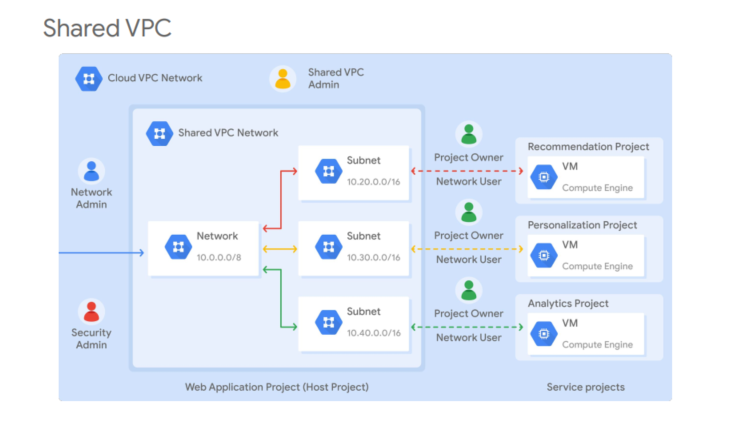
VPC Network Peering overview
- VPC Network Peering is a decentralized or distributed approach to multi-project networking, because each VPC network may remain under the control of separate administrator groups and maintains its own global firewall and routing tables
- Each side of a peering association is set up independently
- No subnet IP range overlap across peered VPC networks
- Transitive peering is not supported
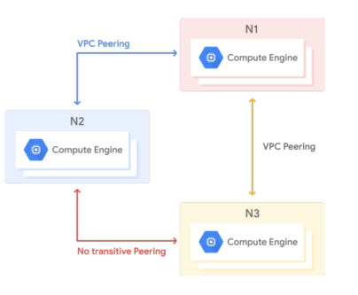
Shared VPC vs VPC Network Peering
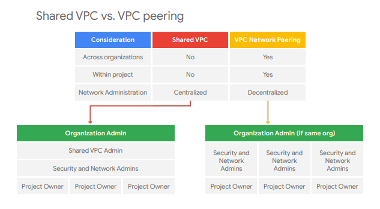
You should consider Shared VPC when:
- configuring private communication between VPC networks within the same organization
- configuring private communication across projects. Shared VPC cannot be used between VPC networks in the same project
- preferring a centralized approach to multi-project networking, because security and network policy occurs in a single designated VPC network
You should consider VPC Network Peering when:
- configuring private communication between VPC networks in different organizations
- configuring private communication between VPC networks in the same project (it also works across projects)
- preferring a decentralized approach, because each VPC network can remain under the control of separate administrator groups and maintains its own global firewall and routing tables
In GCP, you can peer a Shared VPC. It means:
- You can peer a Shared VPC with another Shared VPC
- You can peer a Shared VPC with a custom VPC
- You may consider combining Shared VPC and VPC Network Peering features when designing your network
Sample architecture
Here is the sample architecture that we will work on this article:
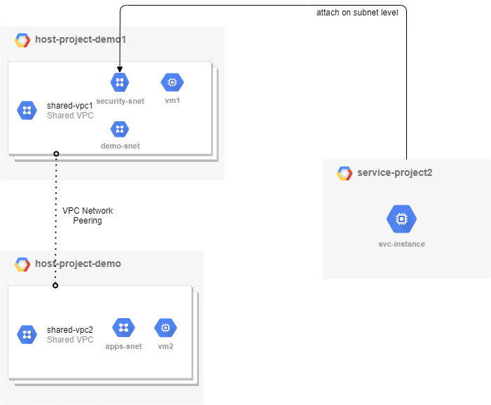
This architecture includes:
- two host projects (host-project-demo1 and host-project-demo) containing a shared vpc in each project (share-vpc-1 and share-vpc-2)
- a service project is attached to host-project-demo1
- vpc peering established between two shared-vpc
Implementing
- Nominate a Shared VPC Admin to create/manage shared vpc networks:. If this step is already done, you can jump into the next one. More information: link
gcloud auth login ORG_ADMIN
gcloud organizations add-iam-policy-binding ORG_ID \
--member='user:EMAIL_ADDRESS' \
--role="roles/compute.xpnAdmin"
gcloud organizations add-iam-policy-binding ORG_ID \
--member='user:EMAIL_ADDRESS' \
--role="roles/resourcemanager.projectIamAdmin"
gcloud auth revoke ORG_ADMIN
If you nominate a Shared VPC Admin for a service account, just replace –member=‘user:EMAIL_ADDRESS’ by –member=‘serviceAccount:SA_EMAIL_ADDRESS’
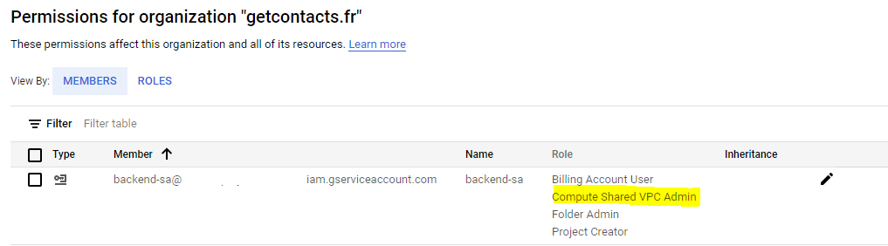
- Create three projects with terraform (two host projects and one service project)
- Create two VPC, its subnetworks and firewall rules
Enable Shared VPC feature for two created vpc above:
gcloud auth login SHARED_VPC_ADMIN
gcloud compute shared-vpc enable HOST_PROJECT_ID
- Associate a service project to host project
gcloud auth login SHARED_VPC_ADMIN
gcloud compute shared-vpc associated-projects add SERVICE_PROJECT_ID --host-project HOST_PROJECT_ID
At this stade, you have two options:
- If you want to share all subnets of host project for service project, create this policy binding below:
gcloud auth login SHARED_VPC_ADMIN
gcloud projects add-iam-policy-binding HOST_PROJECT_ID \
--member "user:SERVICE_PROJECT_ADMIN" \
--role "roles/compute.networkUser"
On the GCP Console, you should see that all subnets in your shared vpc will be shared with service projects.
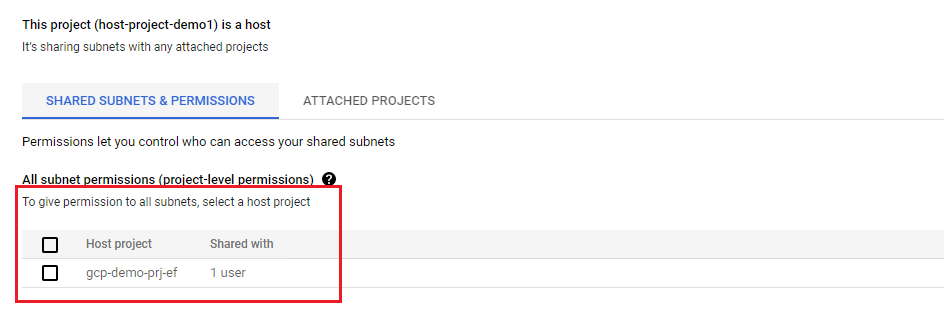
Or you can then check usable subnets by running the below command:
gcloud compute networks subnets list-usable --project HOST_PROJECT_ID
- In some cases, you want to restrict the access of service project to one or some subnets in the host project. In such cases, create this policy binding below:
gcloud auth login SHARED_VPC_ADMIN
gcloud beta compute networks subnets get-iam-policy SUBNET_NAME \
--region SUBNET_REGION \
--project HOST_PROJECT_ID \
--format json > subnet-policy.json
gcloud beta compute networks subnets set-iam-policy SUBNET_NAME subnet-policy.json \
--region SUBNET_REGION \
--project HOST_PROJECT_ID
The subnet-policy.json will be the following:
{
"bindings": [
{
"members": [
"user:[YOUR_USER_EMAIL]",
"group:[YOUR_GROUP_EMAIL]"
"serviceAccount:[YOUR_SERVICE_ACCOUNT_EMAIL]"
],
"role": "roles/compute.networkUser"
}
],
"etag": "[YOUR_ETAG_STRING]"
}
On the GCP Console, you should see that only subnet SUBNET_NAME in your shared vpc will be shared with IAM members described above (subnet-policy.json) of service project.
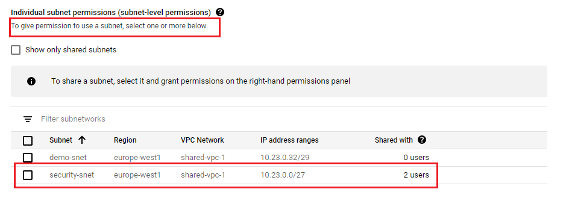
In this example, I restricted only the access of two members (a user and a service account) of service project service-project2 to security-snet on the host-project-demo1. It means that the Service Project Admin can only create resources on this granted subnet and cannot do any operation on demo-subnet.
- Create two instances in each host project and one instance on the service project
- Test private connectivity between networks
- Test private connectivity between an instance on the service project (10.23.0.2) and an instance on shared vpc of host-project-demo1 (10.23.0.4): OK
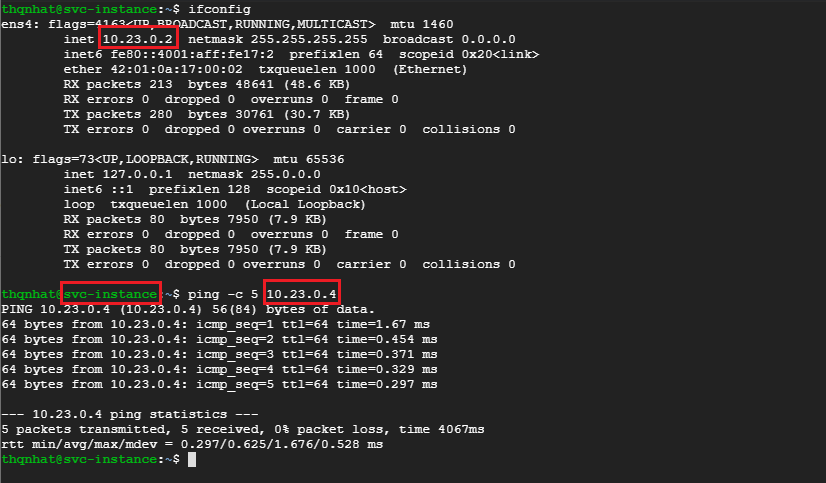
- Test private connectivity between an instance on the shared vpc of host-project-demo1 and an instance on shared vpc of host-project-demo: KO
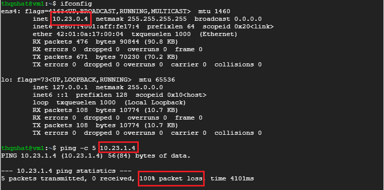
The first test worked because two instances are on the same VPC network (shared-vpc-1 in this case) and firewall rules allow the incoming traffic.
The second test didn’t work because two instances are on different VPC networks (shared-vpc-1 and shared-vpc-2). By default, the instances on the different networks cannot reach out to each other without VPC Peering.
- Add VPC Network Peering between shared vpc networks to enable the private communication
- Test again private connectivity between shared vpc networks
Now, let’s run again the precedent test to check the private connectivity between two shared vpc with peerings enabled.
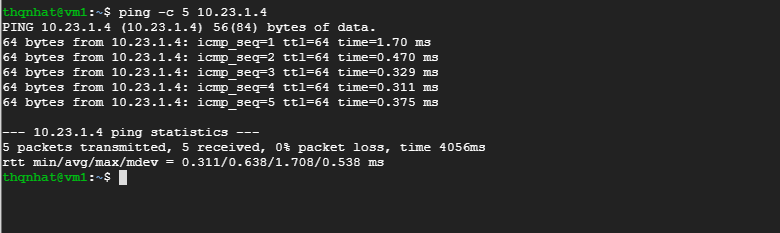
It works!
Let’s check the connectivity from the instance on the service project (10.23.0.2) to the instance on the shared-vpc-2 of host-project-demo (10.23.1.4)
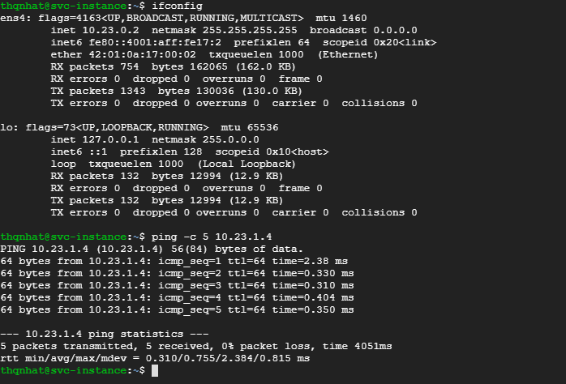
It works also! 😊
Billing
Billing for resources that participate in a Shared VPC network is attributed to the service project where the resource is located, even though the resource uses the Shared VPC network in the host project.
Billing for egress traffic generated by a resource is attributed to the project where the resource is defined. For example, if an instance is created in a service project but uses a Shared VPC network, any billing for egress traffic that it generates is attributed to its service project.
For more information, please refer to this link.
Shared VPC and VPC Network Peering Limits
- Shared VPC Limits :
| Item | Limit Notes | |
|---|---|---|
| Number of service projects that can be attached to a host project | 1000 | subject to be increased |
| Number of Shared VPC host projects in a single organization | 1000 | subject to be increased |
| Number of host projects to which a service project can attach | 1 | cannot be increased |
For more information, please refer to this link.
- VPC Network Peering Limits:
| Item | Limit |
|---|---|
| Maximum number of connections to a single VPC network | 25 |
| Maximum number of static routes in a peering group | 300 |
| Maximum number of forwarding rules for internal protocol forwarding in a peering group | 100 |
For more information, please refer to this link.
Examples and use cases
Some use cases are described at this link.